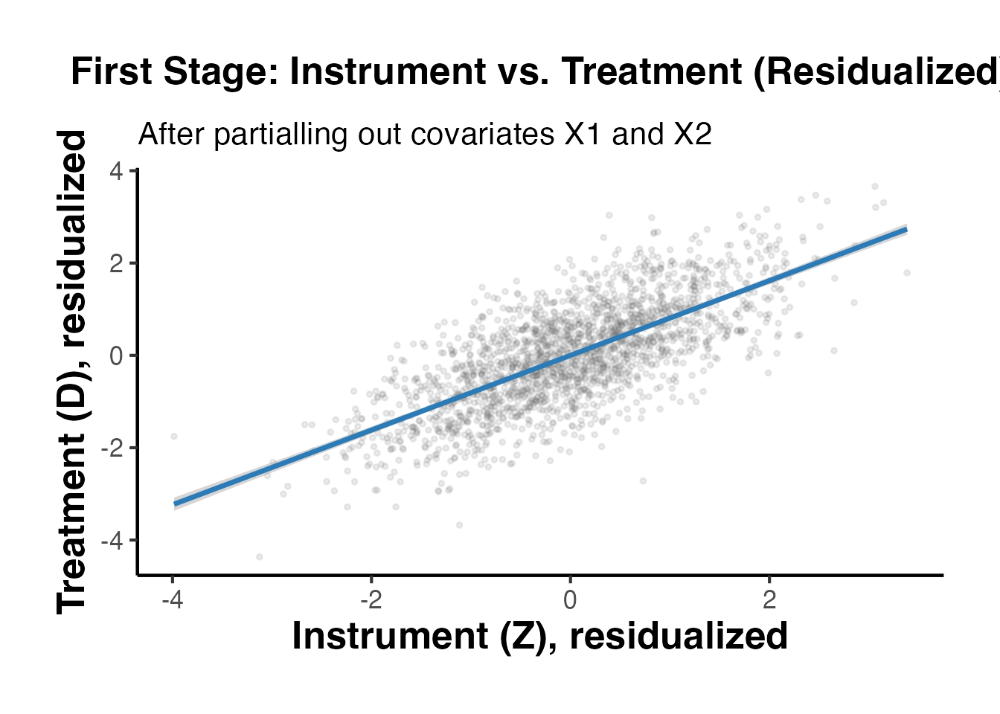
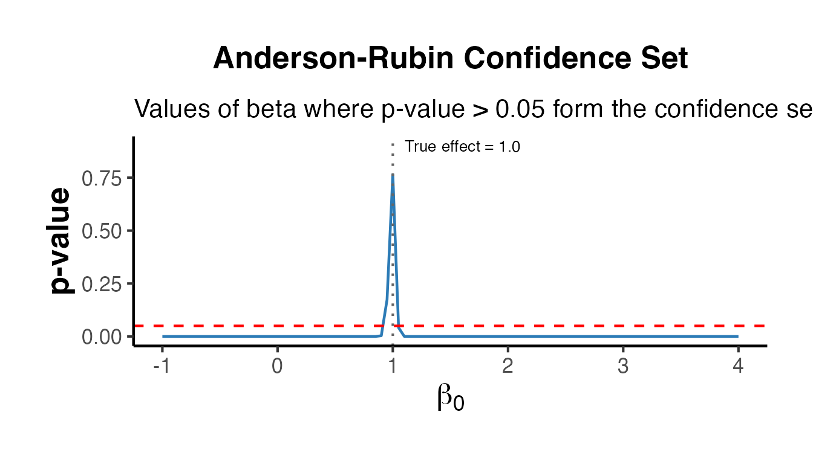
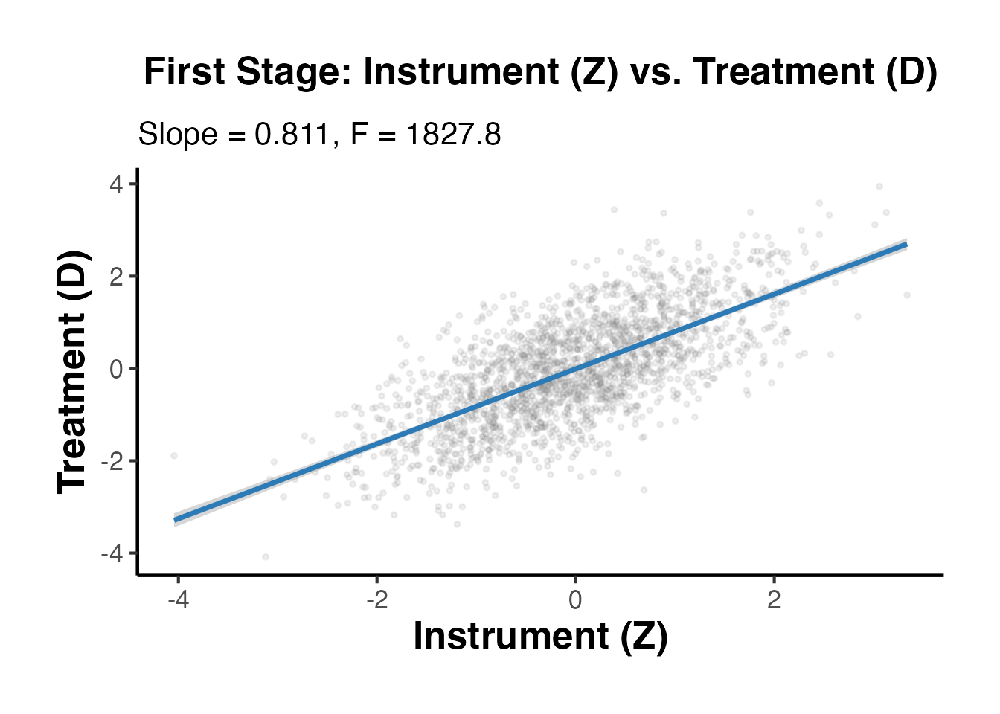
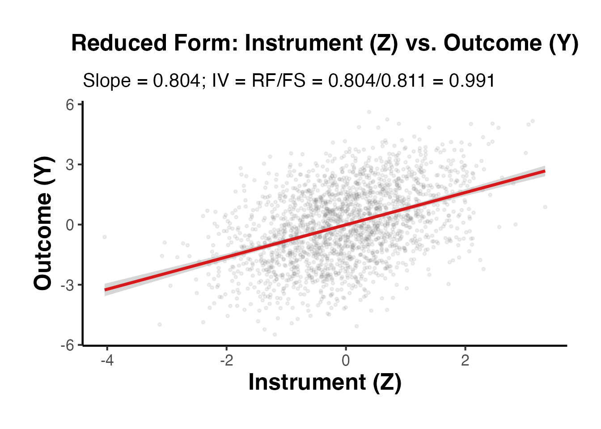
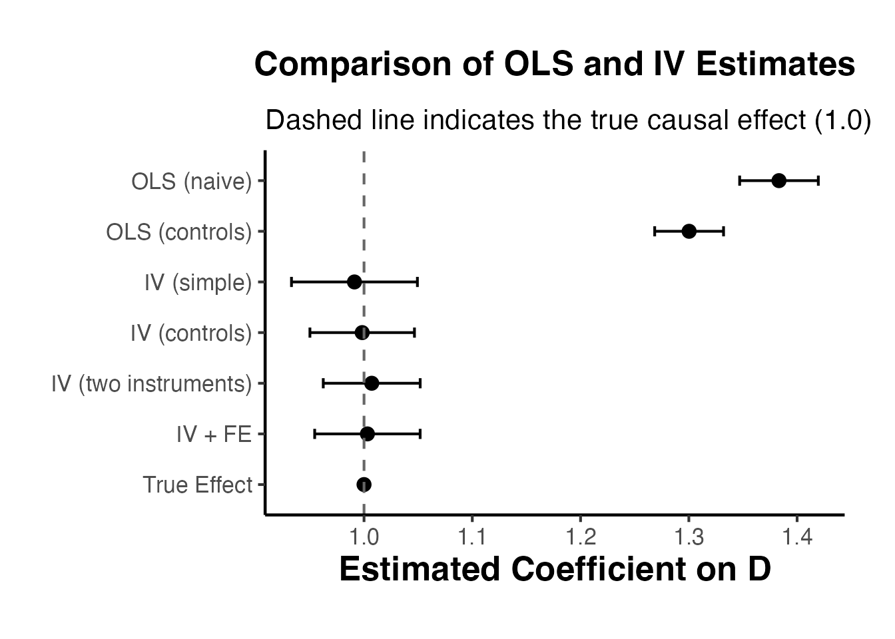
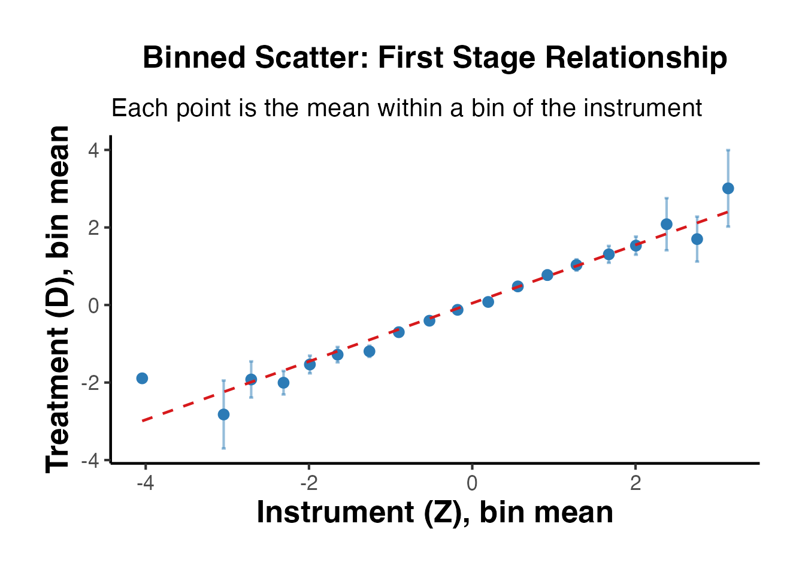
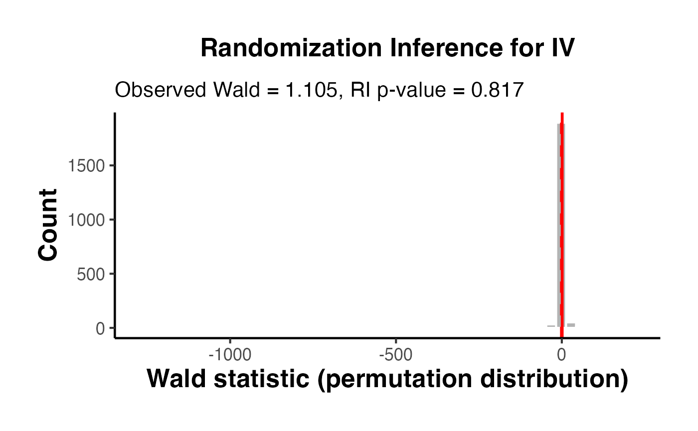

g_iv.RmdInstrumental Variables (IV) estimation is one of the most important and widely used identification strategies in applied econometrics and causal inference. When the standard unconfoundedness assumption fails—meaning there exist unobserved factors that jointly influence both the treatment and the outcome—ordinary least squares (OLS) produces biased and inconsistent estimates of causal effects. IV methods provide a path to consistent estimation by leveraging an external source of variation in the treatment that is unrelated to the confounders.
Consider the linear model:
where is the outcome, is the treatment (or endogenous regressor), is a vector of exogenous covariates, and is the structural error term. The parameter of interest is , the causal effect of on .
OLS consistently estimates only if . Endogeneity occurs when this condition fails, i.e., . There are three primary sources of endogeneity:
Suppose there exists an unobserved variable that affects both and . If is omitted from the regression, it is absorbed into the error term , creating correlation between and . The OLS estimator then captures not only the causal effect of but also the spurious association induced by .
Formally, if the true model is and we omit , then:
The bias term will be nonzero whenever affects both and .
When and are jointly determined—for example, in supply-and-demand systems or when the outcome feeds back into the treatment—the treatment variable is mechanically correlated with the error term. Classic examples include estimating the effect of price on quantity demanded when price is itself determined by demand conditions.
An instrumental variable resolves endogeneity by providing variation in that is exogenous. The simplest IV estimator (the Wald estimator) in the just-identified case with a single binary instrument is:
This ratio isolates the part of the treatment variation driven by the instrument and relates it to the corresponding variation in the outcome.
In the potential outcomes (Rubin) framework, IV estimation targets a specific causal parameter. Following the seminal work of Imbens and Angrist (1994), define for each individual :
Individuals can be classified into four compliance types based on their response to the instrument:
| Type | Description | ||
|---|---|---|---|
| Compliers | 1 | 0 | Take treatment when encouraged |
| Always-takers | 1 | 1 | Always take treatment |
| Never-takers | 0 | 0 | Never take treatment |
| Defiers | 0 | 1 | Do opposite of encouragement |
Imbens and Angrist (1994) showed that under the IV assumptions, the IV estimand identifies the Local Average Treatment Effect (LATE)—the average causal effect for the subpopulation of compliers:
This is a crucial insight: IV does not generally estimate the Average Treatment Effect (ATE) for the entire population, but rather the effect for the subgroup whose treatment status is influenced by the instrument. The policy relevance of the LATE depends on the context and the nature of the instrument.
A valid instrument must satisfy four conditions:
The instrument must be correlated with the endogenous treatment variable:
This is the only assumption that is directly testable from the data, via the first-stage regression. A weak first stage (small F-statistic) leads to severe finite-sample bias and unreliable inference.
The instrument affects the outcome only through its effect on :
Equivalently, there is no direct effect of on . This assumption is not testable and must be justified on theoretical or institutional grounds. It is typically the most contested assumption in applied work.
The instrument is independent of potential outcomes and potential treatment assignments:
This means the instrument is “as good as randomly assigned” with respect to all unobserved factors. In practice, this is often achieved through natural experiments, randomized encouragement, or institutional features.
There are no defiers—the instrument shifts everyone in the same direction (or not at all):
This rules out individuals who would do the opposite of what the instrument encourages. Without monotonicity, the LATE interpretation breaks down. This assumption is automatically satisfied when the instrument is a direct randomization of the treatment, but must be argued in observational settings.
Two-Stage Least Squares (2SLS) is the standard estimation procedure for IV. With endogenous variable , instruments , and exogenous covariates :
First stage: Regress the endogenous variable on the instruments and exogenous covariates:
Obtain the fitted values .
Second stage: Replace with in the structural equation:
The key insight is that contains only the variation in that is driven by the instruments , which is exogenous by assumption. The 2SLS estimator can be written in matrix form as:
where is the projection of onto the space spanned by and , and .
Important: While 2SLS can be understood as a two-step procedure, standard errors must account for the generated regressor in the second stage. Software implementations such as fixest::feols() handle this correctly.
We begin by constructing a rich simulated dataset that illustrates the core endogeneity problem and demonstrates why IV is needed. The data-generating process (DGP) includes an unobserved confounder, an exogenous instrument, covariates, and realistic noise.
set.seed(42)
n <- 2000
# Exogenous covariates
x1 <- rnorm(n)
x2 <- rnorm(n)
# Unobserved confounder: affects both treatment and outcome
u <- rnorm(n)
# Instrument: correlated with D but NOT with U or epsilon
z <- rnorm(n)
# A second instrument for over-identification examples later
z2 <- rnorm(n)
# Endogenous treatment: depends on instruments, covariates, and confounder
d <- 0.8 * z + 0.3 * z2 + 0.3 * x1 + 0.5 * u + rnorm(n, sd = 0.5)
# Outcome: true causal effect of D on Y is 1.0
# U creates the endogeneity problem
y <- 1.0 * d + 0.5 * x1 - 0.3 * x2 + 0.7 * u + rnorm(n, sd = 0.5)
# Panel structure for later examples
group_id <- sample(1:50, n, replace = TRUE)
time_id <- sample(1:10, n, replace = TRUE)
df <- data.frame(
y = y,
d = d,
z = z,
z2 = z2,
x1 = x1,
x2 = x2,
gid = factor(group_id),
tid = factor(time_id)
)In this DGP:
Let us verify the key relationships in the data:
# Instrument is correlated with treatment (relevance)
cat("Cor(Z, D):", round(cor(df$z, df$d), 3), "\n")
#> Cor(Z, D): 0.691
# Instrument is uncorrelated with the confounder (by construction)
cat("Cor(Z, U):", round(cor(df$z, u), 3), "\n")
#> Cor(Z, U): 0.001
# Treatment is correlated with the confounder (endogeneity)
cat("Cor(D, U):", round(cor(df$d, u), 3), "\n")
#> Cor(D, U): 0.454OLS ignores the endogeneity problem and regresses directly on :
ols_naive <- fixest::feols(y ~ d, data = df)
ols_controls <- fixest::feols(y ~ d + x1 + x2, data = df)Both OLS specifications will overestimate the true effect because the positive correlation between and the omitted confounder inflates the coefficient. Even controlling for observed covariates and does not solve the problem because remains unobserved.
The IV estimator uses only the variation in that is driven by the instrument , purging the endogenous component:
fixest::etable(
ols_naive, ols_controls, iv_simple, iv_controls,
headers = c("OLS (naive)", "OLS (controls)", "IV (simple)", "IV (controls)"),
se.below = TRUE,
fitstat = ~ r2 + n + ivf
)
#> ols_naive ols_cont.. iv_simple iv_contr..
#> OLS (naive) OLS (controls) IV (simple) IV (controls)
#> Dependent Var.: y y y y
#>
#> Constant 0.0160 0.0153 0.0011 0.0054
#> (0.0215) (0.0182) (0.0239) (0.0197)
#> d 1.383*** 1.300*** 0.9911*** 0.9983***
#> (0.0185) (0.0162) (0.0296) (0.0246)
#> x1 0.4188*** 0.5102***
#> (0.0190) (0.0212)
#> x2 -0.3235*** -0.3131***
#> (0.0180) (0.0196)
#> _____________________ _________ __________ __________ __________
#> S.E. type IID IID IID IID
#> R2 0.73624 0.81187 0.18059 0.38753
#> Observations 2,000 2,000 2,000 2,000
#> F-test (1st stage), d -- -- 1,827.8 2,070.4
#> ---
#> Signif. codes: 0 '***' 0.001 '**' 0.01 '*' 0.05 '.' 0.1 ' ' 1The OLS estimates will be noticeably above 1.0, while the IV estimates should be centered around the true value of 1.0. Adding covariates to the IV specification can improve precision (smaller standard errors) without affecting consistency.
The fixest package (Berge, 2018) provides a fast and flexible implementation of 2SLS that integrates seamlessly with fixed effects, clustering, and multiple estimation. This section covers the full range of fixest IV capabilities.
The general formula structure for IV in fixest is:
feols(outcome ~ exog_covariates | fixed_effects | endog_var ~ instruments, data)The three parts separated by | are:
0 if none.
# No covariates, no fixed effects
m1 <- fixest::feols(y ~ 1 | 0 | d ~ z, data = df)
# With exogenous covariates, no fixed effects
m2 <- fixest::feols(y ~ x1 + x2 | 0 | d ~ z, data = df)
fixest::etable(m1, m2, headers = c("No controls", "With controls"),
fitstat = ~ r2 + n + ivf)
#> m1 m2
#> No controls With controls
#> Dependent Var.: y y
#>
#> Constant 0.0011 (0.0239) 0.0054 (0.0197)
#> d 0.9911*** (0.0296) 0.9983*** (0.0246)
#> x1 0.5102*** (0.0212)
#> x2 -0.3131*** (0.0196)
#> _____________________ __________________ ___________________
#> S.E. type IID IID
#> R2 0.18059 0.38753
#> Observations 2,000 2,000
#> F-test (1st stage), d 1,827.8 2,070.4
#> ---
#> Signif. codes: 0 '***' 0.001 '**' 0.01 '*' 0.05 '.' 0.1 ' ' 1When multiple instruments are available, include them on the right side of the IV formula. This yields an over-identified model, which can improve efficiency:
# Two instruments for one endogenous variable
m3 <- fixest::feols(y ~ x1 + x2 | 0 | d ~ z + z2, data = df)
summary(m3)
#> TSLS estimation - Dep. Var.: y
#> Endo. : d
#> Instr. : z, z2
#> Second stage: Dep. Var.: y
#> Observations: 2,000
#> Standard-errors: IID
#> Estimate Std. Error t value Pr(>|t|)
#> (Intercept) 0.005678 0.019651 0.288941 0.77266
#> fit_d 1.007106 0.022823 44.127163 < 2.2e-16 ***
#> x1 0.507500 0.020928 24.249676 < 2.2e-16 ***
#> x2 -0.313396 0.019470 -16.096044 < 2.2e-16 ***
#> ---
#> Signif. codes: 0 '***' 0.001 '**' 0.01 '*' 0.05 '.' 0.1 ' ' 1
#> RMSE: 0.877144 Adj. R2: 0.41829
#> F-test (1st stage), d: stat = 1,419.22764, p < 2.2e-16 , on 2 and 1,995 DoF.
#> Wu-Hausman: stat = 606.30077, p < 2.2e-16 , on 1 and 1,995 DoF.
#> Sargan: stat = 0.97198, p = 0.324188, on 1 DoF.With multiple instruments, the 2SLS procedure projects onto the space spanned by both and (and the exogenous covariates), using more information about the exogenous variation in .
One of the key strengths of fixest is the ability to combine high-dimensional fixed effects with IV estimation. The fixed effects are absorbed (projected out) in both stages:
# One-way fixed effects
m4 <- fixest::feols(y ~ x1 + x2 | gid | d ~ z, data = df)
# Two-way fixed effects
m5 <- fixest::feols(y ~ x1 + x2 | gid + tid | d ~ z, data = df)
# Two-way FE with multiple instruments
m6 <- fixest::feols(y ~ x1 + x2 | gid + tid | d ~ z + z2, data = df)
fixest::etable(m4, m5, m6,
headers = c("One-way FE", "Two-way FE", "Two-way FE + 2 IVs"),
fitstat = ~ r2 + n + ivf)
#> m4 m5
#> One-way FE Two-way FE
#> Dependent Var.: y y
#>
#> d 1.001*** (0.0249) 1.003*** (0.0248)
#> x1 0.5111*** (0.0215) 0.5105*** (0.0215)
#> x2 -0.3092*** (0.0197) -0.3090*** (0.0197)
#> Fixed-Effects: ------------------- -------------------
#> gid Yes Yes
#> tid No Yes
#> _____________________ ___________________ ___________________
#> S.E. type IID IID
#> R2 0.40265 0.40496
#> Observations 2,000 2,000
#> F-test (1st stage), d 2,012.0 2,016.3
#>
#> m6
#> Two-way FE + 2 IVs
#> Dependent Var.: y
#>
#> d 1.010*** (0.0231)
#> x1 0.5084*** (0.0213)
#> x2 -0.3092*** (0.0197)
#> Fixed-Effects: -------------------
#> gid Yes
#> tid Yes
#> _____________________ ___________________
#> S.E. type IID
#> R2 0.43489
#> Observations 2,000
#> F-test (1st stage), d 1,377.1
#> ---
#> Signif. codes: 0 '***' 0.001 '**' 0.01 '*' 0.05 '.' 0.1 ' ' 1This is equivalent to first demeaning all variables by the fixed effects and then running 2SLS on the demeaned data, but fixest implements this much more efficiently through the method of alternating projections.
The fitstat() function extracts the first-stage F-statistic and other diagnostic statistics:
# First-stage F-statistic (Kleibergen-Paap for clustered SEs)
fitstat(m3, type = "ivf")
#> F-test (1st stage), d: stat = 1,419.2, p < 2.2e-16, on 2 and 1,995 DoF.
# Multiple statistics
fitstat(m6, type = "ivf")
#> F-test (1st stage), d: stat = 1,377.1, p < 2.2e-16, on 2 and 1,937 DoF.The first-stage F-statistic tests the null hypothesis that the instruments are jointly irrelevant in the first stage. Values below 10 suggest weak instruments (Staiger and Stock, 1997), though more recent guidance suggests higher thresholds (Lee et al., 2022).
The Wu-Hausman test compares the OLS and IV estimates. Under the null hypothesis that is exogenous, OLS is efficient and consistent, while IV is consistent but less efficient. Rejection suggests that OLS is inconsistent and IV should be preferred:
fitstat(m3, type = "ivwald")
#> Wald (1st stage), d: stat = 1,419.2, p < 2.2e-16, on 2 and 1,995 DoF, VCOV: IID.In many applications, standard errors should be clustered to account for within-group correlation. fixest makes this straightforward:
# Cluster by group
m7 <- fixest::feols(y ~ x1 + x2 | gid | d ~ z, data = df, cluster = ~gid)
# Two-way clustering
m8 <- fixest::feols(y ~ x1 + x2 | gid + tid | d ~ z, data = df,
cluster = ~gid + tid)
fixest::etable(m7, m8,
headers = c("Cluster by group", "Two-way cluster"),
fitstat = ~ r2 + n + ivf)
#> m7 m8
#> Cluster by group Two-way cluster
#> Dependent Var.: y y
#>
#> d 1.001*** (0.0201) 1.003*** (0.0334)
#> x1 0.5111*** (0.0194) 0.5105*** (0.0165)
#> x2 -0.3092*** (0.0173) -0.3090*** (0.0072)
#> Fixed-Effects: ------------------- -------------------
#> gid Yes Yes
#> tid No Yes
#> _____________________ ___________________ ___________________
#> S.E.: Clustered by: gid by: gid & tid
#> R2 0.40265 0.40496
#> Observations 2,000 2,000
#> F-test (1st stage), d 2,062.7 2,076.6
#> ---
#> Signif. codes: 0 '***' 0.001 '**' 0.01 '*' 0.05 '.' 0.1 ' ' 1When fixed effects are included, fixest automatically clusters at the highest fixed effect level by default. You can override this with the cluster or vcov arguments.
fixest supports stepwise estimation using the sw() and csw() functions, which is useful for presenting robustness across specifications:
# Stepwise addition of controls
m_step <- fixest::feols(y ~ csw(x1, x2) | 0 | d ~ z, data = df)
fixest::etable(m_step, fitstat = ~ r2 + n + ivf)
#> m_step.1 m_step.2
#> Dependent Var.: y y
#>
#> Constant 0.0088 (0.0211) 0.0054 (0.0197)
#> d 0.9868*** (0.0262) 0.9983*** (0.0246)
#> x1 0.5079*** (0.0226) 0.5102*** (0.0212)
#> x2 -0.3131*** (0.0196)
#> _____________________ __________________ ___________________
#> S.E. type IID IID
#> R2 0.36118 0.38753
#> Observations 2,000 2,000
#> F-test (1st stage), d 2,074.4 2,070.4
#> ---
#> Signif. codes: 0 '***' 0.001 '**' 0.01 '*' 0.05 '.' 0.1 ' ' 1The ivreg package (Fox, Kleiber, and Zeileis, 2023) provides a classical implementation of IV estimation with comprehensive built-in diagnostics. Its formula interface uses | to separate the structural equation from the list of instruments.
library(ivreg)
# Basic 2SLS: y ~ endogenous + exogenous | instruments + exogenous
iv_ivreg <- ivreg(y ~ d + x1 + x2 | z + x1 + x2, data = df)
summary(iv_ivreg)
#>
#> Call:
#> ivreg(formula = y ~ d + x1 + x2 | z + x1 + x2, data = df)
#>
#> Residuals:
#> Min 1Q Median 3Q Max
#> -3.344980 -0.582228 0.002285 0.611791 2.799560
#>
#> Coefficients:
#> Estimate Std. Error t value Pr(>|t|)
#> (Intercept) 0.005389 0.019738 0.273 0.785
#> d 0.998301 0.024616 40.555 <2e-16 ***
#> x1 0.510162 0.021192 24.073 <2e-16 ***
#> x2 -0.313092 0.019556 -16.010 <2e-16 ***
#>
#> Diagnostic tests:
#> df1 df2 statistic p-value
#> Weak instruments 1 1996 2070.4 <2e-16 ***
#> Wu-Hausman 1 1995 438.8 <2e-16 ***
#> Sargan 0 NA NA NA
#> ---
#> Signif. codes: 0 '***' 0.001 '**' 0.01 '*' 0.05 '.' 0.1 ' ' 1
#>
#> Residual standard error: 0.8818 on 1996 degrees of freedom
#> Multiple R-Squared: 0.7792, Adjusted R-squared: 0.7788
#> Wald test: 1168 on 3 and 1996 DF, p-value: < 2.2e-16The key feature of ivreg is its rich diagnostic output:
# Full diagnostics
summary(iv_ivreg, diagnostics = TRUE)
#>
#> Call:
#> ivreg(formula = y ~ d + x1 + x2 | z + x1 + x2, data = df)
#>
#> Residuals:
#> Min 1Q Median 3Q Max
#> -3.344980 -0.582228 0.002285 0.611791 2.799560
#>
#> Coefficients:
#> Estimate Std. Error t value Pr(>|t|)
#> (Intercept) 0.005389 0.019738 0.273 0.785
#> d 0.998301 0.024616 40.555 <2e-16 ***
#> x1 0.510162 0.021192 24.073 <2e-16 ***
#> x2 -0.313092 0.019556 -16.010 <2e-16 ***
#>
#> Diagnostic tests:
#> df1 df2 statistic p-value
#> Weak instruments 1 1996 2070.4 <2e-16 ***
#> Wu-Hausman 1 1995 438.8 <2e-16 ***
#> Sargan 0 NA NA NA
#> ---
#> Signif. codes: 0 '***' 0.001 '**' 0.01 '*' 0.05 '.' 0.1 ' ' 1
#>
#> Residual standard error: 0.8818 on 1996 degrees of freedom
#> Multiple R-Squared: 0.7792, Adjusted R-squared: 0.7788
#> Wald test: 1168 on 3 and 1996 DF, p-value: < 2.2e-16This reports three important tests:
# Over-identified model with two instruments
iv_overid_ivreg <- ivreg(y ~ d + x1 + x2 | z + z2 + x1 + x2, data = df)
summary(iv_overid_ivreg, diagnostics = TRUE)
#>
#> Call:
#> ivreg(formula = y ~ d + x1 + x2 | z + z2 + x1 + x2, data = df)
#>
#> Residuals:
#> Min 1Q Median 3Q Max
#> -3.312621 -0.583047 -0.002259 0.606098 2.786930
#>
#> Coefficients:
#> Estimate Std. Error t value Pr(>|t|)
#> (Intercept) 0.005678 0.019651 0.289 0.773
#> d 1.007106 0.022823 44.127 <2e-16 ***
#> x1 0.507500 0.020928 24.250 <2e-16 ***
#> x2 -0.313396 0.019470 -16.096 <2e-16 ***
#>
#> Diagnostic tests:
#> df1 df2 statistic p-value
#> Weak instruments 2 1995 1419.228 <2e-16 ***
#> Wu-Hausman 1 1995 606.301 <2e-16 ***
#> Sargan 1 NA 0.972 0.324
#> ---
#> Signif. codes: 0 '***' 0.001 '**' 0.01 '*' 0.05 '.' 0.1 ' ' 1
#>
#> Residual standard error: 0.878 on 1996 degrees of freedom
#> Multiple R-Squared: 0.781, Adjusted R-squared: 0.7807
#> Wald test: 1274 on 3 and 1996 DF, p-value: < 2.2e-16You can also extract components for custom analysis:
# Coefficients and confidence intervals
coef(iv_ivreg)
#> (Intercept) d x1 x2
#> 0.005389457 0.998301450 0.510162174 -0.313091895
confint(iv_ivreg)
#> 2.5 % 97.5 %
#> (Intercept) -0.03331903 0.04409795
#> d 0.95002578 1.04657712
#> x1 0.46860077 0.55172357
#> x2 -0.35144463 -0.27473916
# Fitted values and residuals
head(fitted(iv_ivreg))
#> 1 2 3 4 5 6
#> 1.6675428 -1.9572426 -0.6171868 1.7747916 -0.3444108 -1.5605920
head(residuals(iv_ivreg))
#> 1 2 3 4 5 6
#> -0.086637807 -0.199299915 -0.136906115 0.005957688 -1.449318981 -0.935338184Verifying instrument strength is arguably the most critical step in any IV analysis. A weak instrument leads to severe problems: the IV estimator is biased toward OLS in finite samples, standard confidence intervals have incorrect coverage, and hypothesis tests have incorrect size.
Always examine the first-stage regression to understand the instrument-treatment relationship:
first_stage <- fixest::feols(d ~ z + x1 + x2, data = df)
summary(first_stage)
#> OLS estimation, Dep. Var.: d
#> Observations: 2,000
#> Standard-errors: IID
#> Estimate Std. Error t value Pr(>|t|)
#> (Intercept) -0.005437 0.017618 -0.308637 0.75763
#> z 0.808905 0.017778 45.501197 < 2.2e-16 ***
#> x1 0.297313 0.017715 16.782732 < 2.2e-16 ***
#> x2 0.011491 0.017451 0.658494 0.51030
#> ---
#> Signif. codes: 0 '***' 0.001 '**' 0.01 '*' 0.05 '.' 0.1 ' ' 1
#> RMSE: 0.786479 Adj. R2: 0.54183The coefficient on should be statistically significant and economically meaningful. A large t-statistic (absolute value > 3.2) on the excluded instrument is necessary but not sufficient for strong identification.
The first-stage F-statistic tests the joint significance of the excluded instruments. Staiger and Stock (1997) proposed the widely-used rule of thumb that indicates instruments that are strong enough to avoid severe weak instrument problems:
# From the IV model directly
fitstat(m3, type = "ivf")
#> F-test (1st stage), d: stat = 1,419.2, p < 2.2e-16, on 2 and 1,995 DoF.
# Can also compute manually from the first stage
first_stage_both <- fixest::feols(d ~ z + z2 + x1 + x2, data = df)
summary(first_stage_both)
#> OLS estimation, Dep. Var.: d
#> Observations: 2,000
#> Standard-errors: IID
#> Estimate Std. Error t value Pr(>|t|)
#> (Intercept) -0.006305 0.016159 -0.390158 0.69646
#> z 0.809481 0.016306 49.642886 < 2.2e-16 ***
#> z2 0.311666 0.016040 19.430246 < 2.2e-16 ***
#> x1 0.293602 0.016250 18.067745 < 2.2e-16 ***
#> x2 -0.000279 0.016018 -0.017421 0.98610
#> ---
#> Signif. codes: 0 '***' 0.001 '**' 0.01 '*' 0.05 '.' 0.1 ' ' 1
#> RMSE: 0.721194 Adj. R2: 0.614544The partial R-squared of the excluded instruments measures how much of the variation in is explained by the instruments after controlling for the included exogenous variables. This complements the F-statistic:
# R-squared from regression including instruments
r2_full <- summary(fixest::feols(d ~ z + z2 + x1 + x2, data = df))$r2
# R-squared from regression excluding instruments
r2_restricted <- summary(fixest::feols(d ~ x1 + x2, data = df))$r2
partial_r2 <- (r2_full - r2_restricted) / (1 - r2_restricted)
cat("Partial R-squared of instruments:", round(partial_r2, 4), "\n")
#> Partial R-squared of instruments:A low partial R-squared (e.g., below 0.05) warrants concern about instrument strength, even if the F-statistic appears adequate.
Visual inspection of the first-stage relationship provides intuition that summary statistics alone cannot:
# Residualize D and Z with respect to covariates for a clean visual
d_resid <- residuals(lm(d ~ x1 + x2, data = df))
z_resid <- residuals(lm(z ~ x1 + x2, data = df))
first_stage_plot_df <- data.frame(z_resid = z_resid, d_resid = d_resid)
ggplot(first_stage_plot_df, aes(x = z_resid, y = d_resid)) +
geom_point(alpha = 0.12, size = 0.8, color = "grey40") +
geom_smooth(method = "lm", se = TRUE, color = "#2c7bb6", linewidth = 1.2) +
labs(
title = "First Stage: Instrument vs. Treatment (Residualized)",
subtitle = "After partialling out covariates X1 and X2",
x = "Instrument (Z), residualized",
y = "Treatment (D), residualized"
) +
causalverse::ama_theme()
#> `geom_smooth()` using formula = 'y ~ x'
A strong first stage will show a clear linear relationship. If the scatter plot shows a flat or very noisy relationship, the instrument may be too weak.
Stock and Yogo (2005) derived critical values for the first-stage F-statistic that depend on the number of instruments and the tolerated degree of bias or size distortion. Their key results for 2SLS with one endogenous variable are:
| Number of instruments | 10% max bias | 15% max bias | 20% max bias | 25% max bias |
|---|---|---|---|---|
| 1 | 16.38 | 8.96 | 6.66 | 5.53 |
| 2 | 19.93 | 11.59 | 8.75 | 7.25 |
| 3 | 22.30 | 12.83 | 9.54 | 7.80 |
| 5 | 26.87 | 15.09 | 10.27 | 8.84 |
| 10 | 26.80 | 15.38 | 11.49 | 9.43 |
These critical values are considerably higher than the rule-of-thumb of 10, especially when the researcher wants to limit relative bias to 10% or less. The table shows that with a single instrument, the F-statistic should exceed 16.38 to ensure bias is no more than 10% of the OLS bias.
When instruments are weak (low first-stage F), several problems arise:
To demonstrate, let us construct a weak instrument scenario:
set.seed(123)
n_weak <- 2000
u_w <- rnorm(n_weak)
z_w <- rnorm(n_weak)
# Weak first stage: coefficient on z is only 0.05
d_w <- 0.05 * z_w + 0.8 * u_w + rnorm(n_weak, sd = 0.5)
y_w <- 1.0 * d_w + 0.7 * u_w + rnorm(n_weak, sd = 0.5)
df_weak <- data.frame(y = y_w, d = d_w, z = z_w)
# IV estimation with weak instrument
iv_weak <- fixest::feols(y ~ 1 | 0 | d ~ z, data = df_weak)
# Compare OLS and weak-IV
ols_weak <- fixest::feols(y ~ d, data = df_weak)
fixest::etable(ols_weak, iv_weak, headers = c("OLS", "IV (weak)"),
fitstat = ~ r2 + n + ivf)
#> ols_weak iv_weak
#> OLS IV (weak)
#> Dependent Var.: y y
#>
#> Constant -0.0009 (0.0140) 0.0183 (0.0249)
#> d 1.627*** (0.0149) 0.8018. (0.4829)
#> _____________________ _________________ ________________
#> S.E. type IID IID
#> R2 0.85627 0.00050
#> Observations 2,000 2,000
#> F-test (1st stage), d -- 4.8357
#> ---
#> Signif. codes: 0 '***' 0.001 '**' 0.01 '*' 0.05 '.' 0.1 ' ' 1Note how the first-stage F-statistic is very low, and the IV estimate may be far from the true effect and have enormous standard errors.
The Anderson and Rubin (1949) test inverts a test statistic that is robust to weak instruments. It tests the null by checking whether the instruments are correlated with the residuals after controlling for covariates.
The Anderson-Rubin confidence set is the collection of all values that are not rejected:
where is the number of instruments. This confidence set has correct coverage even when instruments are arbitrarily weak.
# Manual Anderson-Rubin confidence set construction
# Grid of hypothesized beta values
beta_grid <- seq(-1, 4, by = 0.05)
ar_pvals <- numeric(length(beta_grid))
for (i in seq_along(beta_grid)) {
# Under H0: beta = beta_grid[i], form Y - beta*D
y_tilde <- df$y - beta_grid[i] * df$d
# Regress on instrument
ar_reg <- lm(y_tilde ~ df$z)
ar_pvals[i] <- summary(ar_reg)$coefficients["df$z", "Pr(>|t|)"]
}
ar_df <- data.frame(beta = beta_grid, pval = ar_pvals)
# AR confidence set: values where p-value > 0.05
ar_ci <- ar_df$beta[ar_df$pval > 0.05]
cat("Anderson-Rubin 95% Confidence Set: [",
round(min(ar_ci), 3), ",", round(max(ar_ci), 3), "]\n")
#> Anderson-Rubin 95% Confidence Set: [ 0.95 , 1 ]
ggplot(ar_df, aes(x = beta, y = pval)) +
geom_line(color = "#2c7bb6", linewidth = 0.8) +
geom_hline(yintercept = 0.05, linetype = "dashed", color = "red") +
geom_vline(xintercept = 1.0, linetype = "dotted", color = "grey40") +
annotate("text", x = 1.0, y = 0.9, label = "True effect = 1.0",
hjust = -0.1, size = 3.5) +
labs(
title = "Anderson-Rubin Confidence Set",
subtitle = "Values of beta where p-value > 0.05 form the confidence set",
x = expression(beta[0]),
y = "p-value"
) +
causalverse::ama_theme()
Lee, McCrary, Moreira, and Porter (2022) proposed the tF procedure, which adjusts critical values for the t-test based on the first-stage F-statistic. When the F-statistic is large, the adjusted critical value converges to the standard 1.96. When F is small, the critical value is inflated to account for weak instrument distortions.
The procedure works as follows:
Key critical values for a 5% test:
| First-stage F | Adjusted critical value |
|---|---|
| 5 | 3.09 |
| 10 | 2.28 |
| 15 | 2.10 |
| 20 | 2.04 |
| 50 | 1.98 |
| 100 | 1.97 |
This approach provides valid inference even with moderately weak instruments and is straightforward to implement as a robustness check.
When the number of instruments exceeds the number of endogenous variables, the model is over-identified. This extra information can be used both for efficiency and for testing instrument validity.
The Sargan (1958) and Hansen (1982) J test examines whether the over-identifying restrictions are satisfied. Under the null hypothesis that all instruments are valid (exogenous), the test statistic is:
where are the 2SLS residuals. Under , where is the number of instruments and is the number of endogenous variables.
# 2SLS with two instruments
iv_overid <- fixest::feols(y ~ x1 + x2 | 0 | d ~ z + z2, data = df)
summary(iv_overid)
#> TSLS estimation - Dep. Var.: y
#> Endo. : d
#> Instr. : z, z2
#> Second stage: Dep. Var.: y
#> Observations: 2,000
#> Standard-errors: IID
#> Estimate Std. Error t value Pr(>|t|)
#> (Intercept) 0.005678 0.019651 0.288941 0.77266
#> fit_d 1.007106 0.022823 44.127163 < 2.2e-16 ***
#> x1 0.507500 0.020928 24.249676 < 2.2e-16 ***
#> x2 -0.313396 0.019470 -16.096044 < 2.2e-16 ***
#> ---
#> Signif. codes: 0 '***' 0.001 '**' 0.01 '*' 0.05 '.' 0.1 ' ' 1
#> RMSE: 0.877144 Adj. R2: 0.41829
#> F-test (1st stage), d: stat = 1,419.22764, p < 2.2e-16 , on 2 and 1,995 DoF.
#> Wu-Hausman: stat = 606.30077, p < 2.2e-16 , on 1 and 1,995 DoF.
#> Sargan: stat = 0.97198, p = 0.324188, on 1 DoF.
# Manual Sargan test
resid_iv <- residuals(iv_overid)
sargan_reg <- lm(resid_iv ~ z + z2 + x1 + x2, data = df)
sargan_stat <- n * summary(sargan_reg)$r.squared
sargan_pval <- pchisq(sargan_stat, df = 1, lower.tail = FALSE) # df = 2 instruments - 1 endog
cat("Sargan J-statistic:", round(sargan_stat, 3), "\n")
#> Sargan J-statistic: 0.972
cat("p-value:", round(sargan_pval, 3), "\n")
#> p-value: 0.324
cat("Degrees of freedom:", 1, "(2 instruments - 1 endogenous variable)\n")
#> Degrees of freedom: 1 (2 instruments - 1 endogenous variable)Interpretation:
Caveat: The Sargan test has low power when instruments are weak and can also reject when all instruments are invalid in the same direction. It tests whether different instruments give the same estimate, not whether any individual instrument is valid in an absolute sense.
# Using ivreg for automatic Sargan test
library(ivreg)
iv_overid_ivreg2 <- ivreg(y ~ d + x1 + x2 | z + z2 + x1 + x2, data = df)
summary(iv_overid_ivreg2, diagnostics = TRUE)
#>
#> Call:
#> ivreg(formula = y ~ d + x1 + x2 | z + z2 + x1 + x2, data = df)
#>
#> Residuals:
#> Min 1Q Median 3Q Max
#> -3.312621 -0.583047 -0.002259 0.606098 2.786930
#>
#> Coefficients:
#> Estimate Std. Error t value Pr(>|t|)
#> (Intercept) 0.005678 0.019651 0.289 0.773
#> d 1.007106 0.022823 44.127 <2e-16 ***
#> x1 0.507500 0.020928 24.250 <2e-16 ***
#> x2 -0.313396 0.019470 -16.096 <2e-16 ***
#>
#> Diagnostic tests:
#> df1 df2 statistic p-value
#> Weak instruments 2 1995 1419.228 <2e-16 ***
#> Wu-Hausman 1 1995 606.301 <2e-16 ***
#> Sargan 1 NA 0.972 0.324
#> ---
#> Signif. codes: 0 '***' 0.001 '**' 0.01 '*' 0.05 '.' 0.1 ' ' 1
#>
#> Residual standard error: 0.878 on 1996 degrees of freedom
#> Multiple R-Squared: 0.781, Adjusted R-squared: 0.7807
#> Wald test: 1274 on 3 and 1996 DF, p-value: < 2.2e-16Using more instruments can improve efficiency but raises concerns:
The sensemakr package (Cinelli and Hazlett, 2020) provides a formal framework for sensitivity analysis to assess how robust an estimated causal effect is to potential omitted variable bias (OVB). While originally designed for OLS, the approach offers valuable insights for the IV context, particularly for assessing the plausibility of the exclusion restriction.
library(sensemakr)
# Fit OLS model (sensemakr works with lm objects)
ols_for_sens <- lm(y ~ d + x1 + x2, data = df)
# Sensitivity analysis: how strong would a confounder need to be
# to explain away the effect of d?
sens <- sensemakr(
model = ols_for_sens,
treatment = "d",
benchmark_covariates = "x1",
kd = 1:3, # multiples of x1's confounding strength
ky = 1:3
)
summary(sens)The summary reports the Robustness Value (RV), which indicates the minimum strength of confounding (as a fraction of the residual variance of both treatment and outcome) needed to fully explain away the observed effect.
# Contour plot of the estimated effect as a function of
# confounding strength with treatment (R2_DZ.X) and outcome (R2_YZ.X)
plot(sens, sensitivity.of = "estimate")The contour plot shows:
# The benchmark uses observed covariates as reference points
# "How strong would the confounder need to be relative to x1?"
plot(sens, sensitivity.of = "estimate", type = "extreme")Benchmarking allows researchers to frame sensitivity in interpretable terms: “A confounder would need to be 3 times as important as in explaining both treatment and outcome variation to reduce the effect below zero.” This makes the abstract question of unobserved confounding concrete and communicable.
In IV estimation, sensemakr can be applied to:
Panel data offers additional opportunities to address endogeneity by combining IV with fixed effects that absorb time-invariant confounders.
When time-invariant unobserved heterogeneity is a concern, entity fixed effects can be combined with IV to control for both time-invariant confounders and time-varying endogeneity:
# Generate panel data
set.seed(42)
n_panel <- 5000
n_groups <- 100
n_time <- 50
panel <- data.frame(
id = rep(1:n_groups, each = n_time),
time = rep(1:n_time, n_groups)
)
# Group-level unobserved heterogeneity
alpha_i <- rnorm(n_groups, sd = 1)
panel$alpha <- alpha_i[panel$id]
# Time-varying confounder
panel$u <- rnorm(n_panel)
# Instrument
panel$z <- rnorm(n_panel)
# Treatment
panel$d <- 0.7 * panel$z + 0.3 * panel$alpha + 0.4 * panel$u + rnorm(n_panel, sd = 0.5)
# Outcome
panel$y <- 1.0 * panel$d + 0.5 * panel$alpha + 0.6 * panel$u + rnorm(n_panel, sd = 0.5)
panel$id <- factor(panel$id)
panel$time <- factor(panel$time)
# OLS without FE (biased by alpha and u)
panel_ols <- fixest::feols(y ~ d, data = panel)
# OLS with FE (still biased by u)
panel_ols_fe <- fixest::feols(y ~ d | id, data = panel)
# IV without FE (consistent if z is valid, but less efficient)
panel_iv <- fixest::feols(y ~ 1 | 0 | d ~ z, data = panel)
# IV with FE (preferred: controls for alpha, instruments for u)
panel_iv_fe <- fixest::feols(y ~ 1 | id | d ~ z, data = panel)
# IV with two-way FE
panel_iv_twfe <- fixest::feols(y ~ 1 | id + time | d ~ z, data = panel)
fixest::etable(panel_ols, panel_ols_fe, panel_iv, panel_iv_fe, panel_iv_twfe,
headers = c("OLS", "OLS+FE", "IV", "IV+FE", "IV+TWFE"),
fitstat = ~ r2 + n + ivf)
#> panel_ols panel_ols_fe panel_iv
#> OLS OLS+FE IV
#> Dependent Var.: y y y
#>
#> Constant 0.0114 (0.0120) 0.0100 (0.0132)
#> d 1.382*** (0.0120) 1.256*** (0.0111) 0.9904*** (0.0186)
#> Fixed-Effects: ----------------- ----------------- ------------------
#> id No Yes No
#> time No No No
#> _____________________ _________________ _________________ __________________
#> S.E. type IID IID IID
#> R2 0.72557 0.79484 0.18971
#> Observations 5,000 5,000 5,000
#> F-test (1st stage), d -- -- 5,178.8
#>
#> panel_iv_fe panel_iv_twfe
#> IV+FE IV+TWFE
#> Dependent Var.: y y
#>
#> Constant
#> d 0.9921*** (0.0157) 0.9920*** (0.0158)
#> Fixed-Effects: ------------------ ------------------
#> id Yes Yes
#> time No Yes
#> _____________________ __________________ __________________
#> S.E. type IID IID
#> R2 0.44424 0.45014
#> Observations 5,000 5,000
#> F-test (1st stage), d 6,118.3 6,090.9
#> ---
#> Signif. codes: 0 '***' 0.001 '**' 0.01 '*' 0.05 '.' 0.1 ' ' 1The key insight: entity fixed effects eliminate bias from time-invariant confounders (), while IV addresses bias from time-varying confounders (). Combining both provides the strongest identification.
An alternative to within-transformation (fixed effects) is first differencing. For unit at time :
First differencing removes time-invariant confounders, just like fixed effects. The instrument in this specification is .
# First-differenced IV can be estimated by:
# 1. Computing first differences manually
# 2. Using feols with differenced variables
# The fixed effects IV estimator in fixest is equivalent to
# within-transformed IV, which gives identical coefficients
# to first-differenced IV only with T=2.In practice, the fixed effects estimator is preferred for because it is more efficient than first differencing under standard assumptions (homoskedasticity and no serial correlation). However, first differencing may be preferred when errors follow a random walk.
Shift-share instruments, also known as Bartik instruments after Bartik (1991), are among the most widely used IV strategies in applied economics. They exploit cross-sectional variation in exposure to aggregate shocks to instrument for local-level variables.
A Bartik instrument takes the form:
where:
The idea is that regions with different initial industry compositions are differentially exposed to national industry-level shocks, generating exogenous variation in the local variable of interest (e.g., employment growth, import exposure).
Recent econometric work has clarified the conditions under which Bartik instruments are valid:
Goldsmith-Pinkham, Sorkin, and Swift (2020): Show that identification comes from the shares. The key identifying assumption is that the initial shares are exogenous (uncorrelated with local demand shocks). Valid if initial industry composition is quasi-random.
Borusyak, Hull, and Jaravel (2022): Show that identification can come from the shifts. The key assumption is that the national growth rates are exogenous (effectively random after conditioning on controls). This requires many sectors with no single sector dominating.
Adao, Kolesar, and Morales (2019): Highlight that standard errors are typically too small because residuals are correlated across regions with similar industry compositions. They propose a correction.
Judge (or examiner) IV designs exploit the quasi-random assignment of cases to decision-makers—such as judges, patent examiners, disability examiners, or loan officers—who vary in their leniency or propensity to assign treatment.
The instrument is typically the leave-out mean of the judge’s decision rate:
where is the set of cases assigned to judge .
Good visualizations are essential for communicating the IV strategy and building intuition.
The first-stage scatter plot shows the relationship between the instrument and the treatment:
ggplot(df, aes(x = z, y = d)) +
geom_point(alpha = 0.12, size = 0.8, color = "grey50") +
geom_smooth(method = "lm", se = TRUE, color = "#2c7bb6", linewidth = 1.2) +
labs(
title = "First Stage: Instrument (Z) vs. Treatment (D)",
subtitle = paste0("Slope = ", round(coef(lm(d ~ z, data = df))["z"], 3),
", F = ", round(summary(lm(d ~ z, data = df))$fstatistic[1], 1)),
x = "Instrument (Z)",
y = "Treatment (D)"
) +
causalverse::ama_theme()
#> `geom_smooth()` using formula = 'y ~ x'
The reduced-form relationship between the instrument and the outcome captures the total effect of on through . The ratio of the reduced-form to the first-stage slope gives the IV estimate:
rf_slope <- coef(lm(y ~ z, data = df))["z"]
fs_slope <- coef(lm(d ~ z, data = df))["z"]
ggplot(df, aes(x = z, y = y)) +
geom_point(alpha = 0.12, size = 0.8, color = "grey50") +
geom_smooth(method = "lm", se = TRUE, color = "#d7191c", linewidth = 1.2) +
labs(
title = "Reduced Form: Instrument (Z) vs. Outcome (Y)",
subtitle = paste0("Slope = ", round(rf_slope, 3),
"; IV = RF/FS = ", round(rf_slope, 3), "/",
round(fs_slope, 3), " = ", round(rf_slope / fs_slope, 3)),
x = "Instrument (Z)",
y = "Outcome (Y)"
) +
causalverse::ama_theme()
#> `geom_smooth()` using formula = 'y ~ x'
A forest plot comparing estimates across specifications makes the bias in OLS visible:
# Gather estimates from multiple models
coef_comparison <- data.frame(
Model = c("OLS (naive)", "OLS (controls)", "IV (simple)", "IV (controls)",
"IV (two instruments)", "IV + FE", "True Effect"),
Estimate = c(
coef(ols_naive)["d"],
coef(ols_controls)["d"],
coef(iv_simple)["fit_d"],
coef(iv_controls)["fit_d"],
coef(m3)["fit_d"],
coef(m5)["fit_d"],
1.0
),
CI_lower = c(
confint(ols_naive)["d", 1],
confint(ols_controls)["d", 1],
confint(iv_simple)["fit_d", 1],
confint(iv_controls)["fit_d", 1],
confint(m3)["fit_d", 1],
confint(m5)["fit_d", 1],
NA
),
CI_upper = c(
confint(ols_naive)["d", 2],
confint(ols_controls)["d", 2],
confint(iv_simple)["fit_d", 2],
confint(iv_controls)["fit_d", 2],
confint(m3)["fit_d", 2],
confint(m5)["fit_d", 2],
NA
)
)
coef_comparison$Model <- factor(
coef_comparison$Model,
levels = rev(coef_comparison$Model)
)
ggplot(coef_comparison, aes(x = Estimate, y = Model)) +
geom_point(size = 3) +
geom_errorbarh(
aes(xmin = CI_lower, xmax = CI_upper),
height = 0.2, na.rm = TRUE
) +
geom_vline(xintercept = 1.0, linetype = "dashed", color = "grey40") +
labs(
title = "Comparison of OLS and IV Estimates",
subtitle = "Dashed line indicates the true causal effect (1.0)",
x = "Estimated Coefficient on D",
y = NULL
) +
causalverse::ama_theme()
#> Warning: `geom_errorbarh()` was deprecated in ggplot2 4.0.0.
#> ℹ Please use the `orientation` argument of `geom_errorbar()` instead.
#> This warning is displayed once per session.
#> Call `lifecycle::last_lifecycle_warnings()` to see where this warning was
#> generated.
#> `height` was translated to `width`.
The plot should clearly show that OLS estimates are biased upward, while IV estimates across various specifications are clustered around the true value.
For presentations and publications, a binned scatter plot can provide a cleaner visual of the first stage by averaging across bins of the instrument:
# Create 20 equal-sized bins of the instrument
df$z_bin <- cut(df$z, breaks = 20, labels = FALSE)
bin_means <- df %>%
group_by(z_bin) %>%
summarise(
z_mean = mean(z),
d_mean = mean(d),
d_se = sd(d) / sqrt(n()),
.groups = "drop"
)
ggplot(bin_means, aes(x = z_mean, y = d_mean)) +
geom_point(size = 2.5, color = "#2c7bb6") +
geom_errorbar(aes(ymin = d_mean - 1.96 * d_se,
ymax = d_mean + 1.96 * d_se),
width = 0.05, color = "#2c7bb6", alpha = 0.5) +
geom_smooth(method = "lm", se = FALSE, color = "#d7191c",
linewidth = 0.8, linetype = "dashed") +
labs(
title = "Binned Scatter: First Stage Relationship",
subtitle = "Each point is the mean within a bin of the instrument",
x = "Instrument (Z), bin mean",
y = "Treatment (D), bin mean"
) +
causalverse::ama_theme()
#> `geom_smooth()` using formula = 'y ~ x'
The k-class estimator unifies several well-known IV estimators under a single parameterization. For the standard IV model with instruments , the k-class estimator solves:
where is the residual-maker matrix from projecting onto the instruments. Different values of yield different estimators:
Why LIML? When instruments are weak or numerous, 2SLS suffers from finite-sample bias toward OLS. LIML is approximately median-unbiased even with weak instruments, making it a safer default. Fuller’s estimator further reduces bias and has finite moments (unlike LIML whose moments may not exist).
The Anderson-Rubin (AR) test and the Conditional Likelihood Ratio (CLR) test provide inference that remains valid regardless of instrument strength—they do not rely on first-stage F-statistics being large.
ivmodel
library(ivmodel)
# Simulate IV data with a moderately weak instrument
set.seed(42)
n <- 500
z <- rnorm(n)
u <- rnorm(n)
x_covar <- rnorm(n)
d <- 0.3 * z + 0.8 * u + rnorm(n) # weak instrument (pi = 0.3)
y <- 1.5 * d + 0.5 * x_covar + u + rnorm(n) # true beta = 1.5
# Fit the ivmodel object
iv_fit <- ivmodel(
Y = y, D = d, Z = z, X = x_covar,
intercept = TRUE
)
# Extract estimates from different estimators
tsls_est <- TSLS(iv_fit)
liml_est <- LIML(iv_fit)
full_est <- Fuller(iv_fit, fuller = 1) # Fuller with a = 1
full4_est <- Fuller(iv_fit, fuller = 4) # Fuller with a = 4
# Custom k-class: k = 0.5 (between OLS and 2SLS)
kclass_est <- KClass(iv_fit, k = 0.5)
# Anderson-Rubin test (valid with weak instruments)
ar_result <- AR.test(iv_fit)
# Conditional Likelihood Ratio test
clr_result <- CLR(iv_fit)
# Build comparison table
comparison <- data.frame(
Estimator = c("2SLS", "LIML", "Fuller(1)", "Fuller(4)", "K-Class(0.5)"),
Estimate = c(
tsls_est$point.est, liml_est$point.est,
full_est$point.est, full4_est$point.est,
kclass_est$point.est
),
Std.Error = c(
tsls_est$std.err, liml_est$std.err,
full_est$std.err, full4_est$std.err,
kclass_est$std.err
),
CI.Lower = c(
tsls_est$ci[1], liml_est$ci[1],
full_est$ci[1], full4_est$ci[1],
kclass_est$ci[1]
),
CI.Upper = c(
tsls_est$ci[2], liml_est$ci[2],
full_est$ci[2], full4_est$ci[2],
kclass_est$ci[2]
)
)
knitr::kable(comparison, digits = 3,
caption = "K-Class Estimator Comparison (True beta = 1.5)")
cat("\nAnderson-Rubin test p-value:", ar_result$p.value,
"\nCLR test p-value:", clr_result$p.value, "\n")When 2SLS and LIML estimates diverge substantially, this signals that weak instruments may be biasing 2SLS. In such cases, prefer LIML or Fuller, and rely on AR/CLR confidence sets for inference.
ivDiag
The conventional first-stage F-statistic (Staiger and Stock 1997) can be misleading with heteroskedastic, clustered, or serially correlated errors. @olea2013robust proposed the effective F-statistic, which accounts for non-iid errors and provides a single threshold (approximately 10) for detecting weak instruments in the presence of heteroskedasticity or clustering.
The tF procedure (Lee et al. 2022) adjusts the t-ratio critical values based on the effective F-statistic, providing valid inference even when instruments are not strong. This avoids the binary strong/weak classification and instead continuously adjusts for instrument strength.
ivDiag
library(ivDiag)
# Simulate panel-like data
set.seed(42)
n <- 1000
df_diag <- data.frame(
Y = rnorm(n),
D = rnorm(n),
Z = rnorm(n),
X1 = rnorm(n),
X2 = rnorm(n),
cl = sample(1:50, n, replace = TRUE)
)
# Create endogeneity and instrument relevance
u <- rnorm(n)
df_diag$D <- 0.4 * df_diag$Z + 0.3 * df_diag$X1 + 0.6 * u + rnorm(n, sd = 0.5)
df_diag$Y <- 2.0 * df_diag$D + 0.5 * df_diag$X1 - 0.3 * df_diag$X2 + u + rnorm(n, sd = 0.5)
# One-call comprehensive diagnostics
diag_result <- ivDiag(
data = df_diag,
Y = "Y",
D = "D",
Z = "Z",
controls = c("X1", "X2"),
cl = df_diag$cl # cluster variable
)
# Display all diagnostic results
diag_result
# Individual diagnostic functions
eff_f <- eff_F(
data = df_diag,
Y = "Y",
D = "D",
Z = "Z",
controls = c("X1", "X2"),
cl = df_diag$cl
)
cat("Effective F-statistic:", eff_f$F_eff, "\n")
# tF-adjusted inference
tf_result <- tF(
data = df_diag,
Y = "Y",
D = "D",
Z = "Z",
controls = c("X1", "X2"),
cl = df_diag$cl
)
tf_resultThe ivDiag package (Lal et al. 2023) consolidates best-practice diagnostics into a single call. If ivDiag is not available on CRAN, the effective F-statistic can also be computed manually by adjusting the Kleibergen-Paap F-statistic for non-iid errors.
When the number of candidate instruments is large relative to the sample size , 2SLS suffers from severe finite-sample bias—the bias approaches that of OLS as grows. Even when , overfitting in the first stage inflates the effective endogeneity of the fitted values.
LASSO-based instrument selection (Belloni, Chen, Chernozhukov, and Hansen 2012) addresses this by using -penalized regression in the first stage to select the most relevant instruments, then performing IV estimation with only the selected instruments. The hdm package implements the post-LASSO IV estimator with formal guarantees on inference validity.
Three variants are available:
rlassoIV(): LASSO selects instruments in the first stagerlassoIVselectZ(): LASSO selects among instruments onlyrlassoIVselectX(): LASSO selects among controls onlyhdm
library(hdm)
# Simulate data with many candidate instruments
set.seed(42)
n <- 500
K <- 100 # many candidate instruments
# Generate instruments: only first 5 are truly relevant
Z_mat <- matrix(rnorm(n * K), n, K)
colnames(Z_mat) <- paste0("z", 1:K)
pi_true <- c(rep(0.3, 5), rep(0, K - 5)) # sparse first stage
u <- rnorm(n)
x_ctrl <- rnorm(n)
d <- Z_mat %*% pi_true + 0.7 * u + rnorm(n, sd = 0.5)
y <- 1.0 * d + 0.5 * x_ctrl + u + rnorm(n, sd = 0.5) # true beta = 1.0
# LASSO-selected IV estimation
lasso_iv <- rlassoIV(
x = x_ctrl, d = d, y = y, z = Z_mat,
select.X = TRUE, select.Z = TRUE
)
summary(lasso_iv)
# Variant: select only among instruments
lasso_z <- rlassoIVselectZ(
x = x_ctrl, d = d, y = y, z = Z_mat
)
summary(lasso_z)
# Variant: select only among controls
lasso_x <- rlassoIVselectX(
x = x_ctrl, d = d, y = y, z = Z_mat[, 1:5]
)
summary(lasso_x)
# Compare with naive 2SLS using all instruments
cat("\nLASSO IV estimate:", coef(lasso_iv)["d"],
"\nTrue parameter: 1.0\n")When the number of candidate instruments is large, LASSO selection dramatically reduces finite-sample bias while maintaining valid post-selection inference.
The Jackknife IV Estimator (JIVE) addresses finite-sample bias in 2SLS by using leave-one-out predictions from the first stage. For each observation , the first-stage fitted value is computed from a regression that excludes observation :
This breaks the mechanical correlation between the first-stage fitted values and the second-stage errors that drives 2SLS bias, particularly when instruments are numerous or weak. JIVE1 uses directly; JIVE2 uses a bias-corrected version that further improves performance.
Angrist, Imbens, and Krueger (1999) showed that JIVE is approximately unbiased for the coefficient on the endogenous variable when the number of instruments is large.
SteinIV
library(SteinIV)
# Simulate data with multiple instruments
set.seed(42)
n <- 300
K <- 20 # number of instruments
Z_mat <- matrix(rnorm(n * K), n, K)
pi_coefs <- runif(K, 0.05, 0.15)
u <- rnorm(n)
d <- Z_mat %*% pi_coefs + 0.6 * u + rnorm(n, sd = 0.5)
y <- 2.0 * d + u + rnorm(n, sd = 0.5) # true beta = 2.0
# JIVE estimation
jive_result <- jive.est(
y = y, X = d, Z = Z_mat
)
cat("JIVE1 estimate:", jive_result$est["JIVE1"],
"\nJIVE2 estimate:", jive_result$est["JIVE2"],
"\n2SLS estimate:", jive_result$est["TSLS"],
"\nOLS estimate:", jive_result$est["OLS"],
"\nTrue parameter: 2.0\n")JIVE typically produces estimates closer to the true parameter than 2SLS when instruments are numerous, at the cost of slightly larger standard errors.
The Marginal Treatment Effect (Heckman and Vytlacil 2005) generalizes the LATE framework by defining a treatment effect for each value of the unobserved resistance to treatment :
where is the quantile of the first-stage unobservable such that with being the propensity score. The MTE evaluated at gives the treatment effect for individuals who are indifferent between treatment and control when the propensity score equals .
All conventional treatment effect parameters can be recovered as weighted averages of the MTE:
This makes the MTE a fundamental building block for extrapolation beyond LATE.
ivmte
library(ivmte)
# Simulate data for MTE estimation
set.seed(42)
n <- 2000
z <- sample(1:5, n, replace = TRUE) # discrete instrument
x <- rnorm(n)
u_d <- runif(n) # unobserved resistance
# Propensity score depends on Z
pscore <- plogis(-1 + 0.5 * z)
d <- as.integer(pscore >= u_d)
# Heterogeneous treatment effects: MTE varies with u_d
y0 <- 1 + 0.5 * x + rnorm(n, sd = 0.5)
y1 <- y0 + 2 - 1.5 * u_d + 0.3 * x # MTE decreasing in u_d
y <- d * y1 + (1 - d) * y0
df_mte <- data.frame(y = y, d = d, z = z, x = x)
# Parametric MTE specification
# m0 and m1 are the potential outcome equations
mte_fit <- ivmte(
data = df_mte,
target = "ate",
m0 = ~ x + u, # control potential outcome
m1 = ~ x + u, # treated potential outcome
propensity = d ~ z, # first stage for propensity score
instrument = "z"
)
mte_fit
# Semiparametric specification with Bernstein polynomials
mte_fit_semi <- ivmte(
data = df_mte,
target = "ate",
m0 = ~ 0 + u + I(u^2) + x + x:u,
m1 = ~ 0 + u + I(u^2) + x + x:u,
propensity = d ~ z,
instrument = "z",
uname = "u"
)
mte_fit_semiThe MTE framework is particularly valuable when treatment effects vary across individuals and you want to extrapolate beyond the complier subpopulation identified by a specific instrument.
The control function approach provides an alternative to standard IV by explicitly modeling the source of endogeneity. The key insight is that endogeneity arises because the treatment is correlated with the structural error . If we can recover the component of that is correlated with —via the first-stage residuals—we can include it as a control to remove the bias.
Procedure:
In the linear model, this is numerically identical to 2SLS. However, the control function approach has two major advantages:
Important: Standard errors from the second stage are incorrect because they ignore estimation error in . Bootstrap or analytical corrections are required.
fixest
# Simulate data
set.seed(42)
n <- 1000
z <- rnorm(n)
u <- rnorm(n)
x <- rnorm(n)
d <- 0.5 * z + 0.3 * x + 0.7 * u + rnorm(n, sd = 0.5)
y <- 1.5 * d + 0.8 * x + u + rnorm(n, sd = 0.5)
df_cf <- data.frame(y = y, d = d, z = z, x = x)
# Step 1: First-stage regression
first_stage <- feols(d ~ z + x, data = df_cf)
df_cf$v_hat <- residuals(first_stage)
# Step 2: Second-stage with control function
cf_stage2 <- feols(y ~ d + x + v_hat, data = df_cf)
# Compare with standard 2SLS
iv_standard <- feols(y ~ x | d ~ z, data = df_cf)
# Display results
etable(
iv_standard, cf_stage2,
headers = c("2SLS", "Control Function"),
notes = "Note: CF standard errors require bootstrap correction."
)
#> iv_standard cf_stage2
#> 2SLS Control Function
#> Dependent Var.: y y
#>
#> Constant -0.0128 (0.0350) -0.0128 (0.0238)
#> d 1.518*** (0.0679) 1.518*** (0.0461)
#> x 0.7675*** (0.0385) 0.7675*** (0.0261)
#> v_hat 0.9294*** (0.0535)
#> _______________ __________________ __________________
#> S.E. type IID IID
#> Observations 1,000 1,000
#> R2 0.28794 0.92201
#> Adj. R2 0.28651 0.92177
#> ---
#> Signif. codes: 0 '***' 0.001 '**' 0.01 '*' 0.05 '.' 0.1 ' ' 1
# The t-stat on v_hat tests endogeneity
cat("\nEndogeneity test (t-stat on v_hat):",
coef(cf_stage2)["v_hat"] / se(cf_stage2)["v_hat"], "\n")
#>
#> Endogeneity test (t-stat on v_hat): 17.36462
# Bootstrap for correct standard errors
set.seed(42)
boot_coefs <- replicate(500, {
idx <- sample(n, replace = TRUE)
df_b <- df_cf[idx, c("y", "d", "z", "x")]
fs <- lm(d ~ z + x, data = df_b)
df_b$v_hat <- residuals(fs)
ss <- lm(y ~ d + x + v_hat, data = df_b)
coef(ss)["d"]
})
cat("Bootstrap SE for beta_d:", sd(boot_coefs),
"\nBootstrap 95% CI: [", quantile(boot_coefs, 0.025),
",", quantile(boot_coefs, 0.975), "]\n")
#> Bootstrap SE for beta_d: 0.06780177
#> Bootstrap 95% CI: [ 1.377734 , 1.642153 ]The control function approach is especially useful in nonlinear settings (e.g., probit or Poisson models) where plugging in first-stage fitted values (as in standard 2SLS) produces inconsistent estimates.
In many empirical settings, a valid external instrument simply does not exist. Two classes of methods exploit features of the data itself to achieve identification:
Lewbel (2012) heteroskedasticity-based instruments exploit heteroskedasticity in the first-stage errors to construct instruments from the data. The identifying assumption is that the covariance between the first-stage regressors and the product of the first- and second-stage errors is zero, while the first-stage errors are heteroskedastic. The constructed instruments are , where are first-stage residuals.
Gaussian copula correction (Park and Gupta 2012) exploits the assumption that the endogenous regressor is non-normally distributed while the errors are normal. Under a Gaussian copula, the correlation between the endogenous variable and the error can be identified from the marginal distribution of the regressor.
Both methods trade the standard exclusion restriction for alternative (untestable) assumptions. They are best used as robustness checks or when supplementing weak external instruments.
REndo
library(REndo)
# Simulate data with endogeneity but no external instrument
set.seed(42)
n <- 1000
x1 <- rnorm(n)
x2 <- rnorm(n)
# Create endogeneity: d correlated with error
u <- rnorm(n)
# Non-normal endogenous variable (needed for copula)
d_latent <- 0.5 * x1 + 0.3 * x2 + 0.6 * u + rexp(n, rate = 1)
d <- d_latent
y <- 1.0 * d + 0.5 * x1 - 0.3 * x2 + u + rnorm(n, sd = 0.5)
df_endo <- data.frame(y = y, d = d, x1 = x1, x2 = x2)
# Gaussian copula correction
cop_fit <- copulaCorrection(
y ~ d + x1 + x2 | continuous(d),
data = df_endo
)
summary(cop_fit)
# Lewbel (2012) heteroskedasticity-based instruments
het_fit <- hetErrorsIV(
y ~ d + x1 + x2 | IIV(d),
data = df_endo
)
summary(het_fit)These methods should be applied with caution: the Gaussian copula requires non-normality of the endogenous regressor, and Lewbel’s approach requires heteroskedasticity in the first stage. Diagnostic checks (e.g., testing for heteroskedasticity, assessing distributional assumptions) are essential.
When the exclusion restriction is only approximately valid—the instrument may have a small direct effect on the outcome—point identification fails. Instead, we can obtain bounds on the causal effect that remain valid under weaker assumptions.
Nevo and Rosen (2012) derive bounds when the instrument is “imperfect” (correlated with the error, but the direction and rough magnitude of the correlation are known). Conley, Hansen, and Rossi (2012) propose a framework where the direct effect of the instrument on the outcome lies in a known interval , yielding bounds on the structural parameter.
For the binary treatment and binary instrument case, Balke and Pearl (1997) derived sharp bounds using the potential outcomes framework without assuming monotonicity:
# Simulate IV data
set.seed(42)
n <- 2000
z <- rnorm(n)
u <- rnorm(n)
d <- 0.5 * z + 0.6 * u + rnorm(n)
y <- 1.5 * d + u + rnorm(n) # true beta = 1.5
# Standard 2SLS (assumes gamma = 0)
iv_fit <- feols(y ~ 1 | d ~ z)
# Sensitivity analysis: what if Z has direct effect gamma on Y?
# Y = beta*D + gamma*Z + u
# 2SLS estimates beta + gamma/pi, where pi is first-stage coefficient
pi_hat <- coef(feols(d ~ z))["z"]
beta_2sls <- coef(iv_fit)["fit_d"]
# Bounds for different assumptions about gamma
gamma_grid <- seq(-0.3, 0.3, by = 0.05)
beta_bounds <- beta_2sls - gamma_grid / pi_hat
bounds_df <- data.frame(
gamma = gamma_grid,
beta_adjusted = beta_bounds
)
# Plot sensitivity
ggplot(bounds_df, aes(x = gamma, y = beta_adjusted)) +
geom_line(linewidth = 1) +
geom_hline(yintercept = 1.5, linetype = "dashed", color = "red") +
geom_vline(xintercept = 0, linetype = "dotted") +
geom_ribbon(
data = subset(bounds_df, gamma >= -0.1 & gamma <= 0.1),
aes(ymin = -Inf, ymax = Inf), alpha = 0.15, fill = "steelblue"
) +
labs(
title = "Sensitivity of IV Estimate to Exclusion Restriction Violations",
x = expression(gamma ~ "(direct effect of Z on Y)"),
y = expression(hat(beta) ~ "(adjusted estimate)"),
caption = "Dashed red line = true beta. Shaded region: |gamma| < 0.1"
) +
causalverse::ama_theme()Partial identification provides honest inference when the exclusion restriction is doubtful. Reporting bounds alongside point estimates can strengthen the credibility of IV analyses.
Standard IV assumes a linear relationship between the treatment and outcome. When this functional form is misspecified, 2SLS estimates a weighted average of marginal effects that may not correspond to any policy-relevant parameter.
Nonparametric IV (NPIV) estimation relaxes the linearity assumption entirely, estimating the structural function in:
This is an ill-posed inverse problem: the conditional expectation restriction does not uniquely pin down without regularization. Various approaches exist, including sieve estimation (Newey and Powell 2003), Tikhonov regularization, and kernel-based methods.
npiv
library(npiv)
# Simulate data with nonlinear structural function
set.seed(42)
n <- 1000
z <- rnorm(n)
u <- rnorm(n)
d <- 0.6 * z + 0.5 * u + rnorm(n, sd = 0.5)
# True structural function: g(d) = sin(d) + 0.5*d
y <- sin(d) + 0.5 * d + u + rnorm(n, sd = 0.3)
# NPIV estimation using series/sieve approach
npiv_fit <- npiv(y = y, d = d, z = z)
# Plot estimated vs true structural function
plot(npiv_fit,
main = "Nonparametric IV: Estimated vs True Structural Function")NPIV is most useful for exploratory analysis to check whether the linear specification is adequate, or when theory suggests a nonlinear structural relationship.
Standard IV inference relies on asymptotic approximations that may perform poorly in small samples or with weak instruments. Randomization inference (also called permutation inference) provides exact, finite-sample valid p-values by exploiting the known or assumed assignment mechanism of the instrument.
The key idea: under the sharp null hypothesis for all units, we can compute the implied residual for each observation. If the instrument is randomly assigned, permuting should not systematically affect the relationship between and . The randomization distribution of the Wald statistic under provides exact p-values.
# Simulate IV data
set.seed(42)
n <- 200
z <- rbinom(n, 1, 0.5) # randomly assigned binary instrument
u <- rnorm(n)
d <- 0.4 * z + 0.5 * u + rnorm(n, sd = 0.5)
y <- 1.0 * d + u + rnorm(n, sd = 0.5) # true beta = 1.0
# Observed Wald statistic
wald_obs <- (mean(y[z == 1]) - mean(y[z == 0])) /
(mean(d[z == 1]) - mean(d[z == 0]))
# Permutation distribution under H0: beta = 0
set.seed(42)
n_perm <- 2000
wald_perm <- numeric(n_perm)
for (b in seq_len(n_perm)) {
z_perm <- sample(z) # permute instrument assignment
wald_perm[b] <- (mean(y[z_perm == 1]) - mean(y[z_perm == 0])) /
(mean(d[z_perm == 1]) - mean(d[z_perm == 0]))
}
# Two-sided p-value
p_value_ri <- mean(abs(wald_perm) >= abs(wald_obs))
# Visualize
perm_df <- data.frame(wald = wald_perm)
ggplot(perm_df, aes(x = wald)) +
geom_histogram(bins = 50, fill = "grey70", color = "white") +
geom_vline(xintercept = wald_obs, color = "red", linewidth = 1) +
geom_vline(xintercept = -wald_obs, color = "red",
linewidth = 1, linetype = "dashed") +
labs(
title = "Randomization Inference for IV",
subtitle = paste0("Observed Wald = ", round(wald_obs, 3),
", RI p-value = ", round(p_value_ri, 3)),
x = "Wald statistic (permutation distribution)",
y = "Count"
) +
causalverse::ama_theme()
Randomization inference is especially valuable when the instrument is experimentally assigned (e.g., lottery-based instruments) and the sample is small.
The Regression Kink Design (RKD; Card, Lee, Pei, and Weber 2015) is an IV strategy that exploits a kink (change in slope) in the relationship between a running variable and the treatment at a known threshold, rather than a discontinuous jump as in the standard RDD.
If a policy rule creates a kink in the treatment at threshold :
where and join continuously at but have different slopes, then the ratio of the change in the slope of to the change in the slope of at identifies a causal effect:
This is estimated using local polynomial regression with deriv = 1 in the rdrobust package.
rdrobust
library(rdrobust)
# Simulate data with a kink in the treatment at x = 0
set.seed(42)
n <- 2000
x <- runif(n, -2, 2) # running variable
u <- rnorm(n)
# Treatment has different slopes on each side of the kink
d <- ifelse(x < 0, 0.5 * x, 0.5 * x + 0.8 * x) + 0.3 * u + rnorm(n, sd = 0.3)
# Outcome depends on treatment
y <- 1.5 * d + 0.5 * x + u + rnorm(n, sd = 0.5)
# RKD estimation: use deriv = 1 for kink (slope change)
rkd_fit <- rdrobust(y = y, x = x, c = 0, deriv = 1)
summary(rkd_fit)
# First stage kink
rkd_first <- rdrobust(y = d, x = x, c = 0, deriv = 1)
summary(rkd_first)
# Fuzzy RKD: ratio of outcome kink to treatment kink
cat("\nFuzzy RKD estimate (ratio):",
rkd_fit$coef["Conventional"] / rkd_first$coef["Conventional"], "\n")The RKD is identified under weaker conditions than the standard RDD (no discontinuity needed), but it requires smoothness of potential outcomes at a higher order and is more sensitive to bandwidth choice.
Mendelian randomization (MR) applies the IV framework to epidemiology, using genetic variants (SNPs) as instruments for modifiable risk factors (e.g., BMI, cholesterol) to estimate their causal effects on health outcomes. The random assortment of alleles during meiosis provides a natural randomization that satisfies instrument relevance, and the exclusion restriction holds if the SNP affects the outcome only through the risk factor (no horizontal pleiotropy).
The standard MR assumptions mirror IV:
When multiple SNPs are available, MR-Egger regression provides a test for and correction of horizontal pleiotropy.
library(MendelianRandomization)
# Simulated summary-level MR data (as typically available from GWAS)
set.seed(42)
n_snps <- 20
# True causal effect of risk factor on outcome: beta = 0.5
beta_true <- 0.5
bx <- rnorm(n_snps, mean = 0.3, sd = 0.1) # SNP-exposure associations
by <- beta_true * bx + rnorm(n_snps, sd = 0.05) # SNP-outcome associations
sx <- rep(0.05, n_snps) # SE of SNP-exposure
sy <- rep(0.05, n_snps) # SE of SNP-outcome
# Create MR input object
mr_input <- mr_input(
bx = bx, bxse = sx,
by = by, byse = sy
)
# IVW (inverse-variance weighted) estimate
mr_ivw <- mr_ivw(mr_input)
mr_ivw
# MR-Egger (allows for pleiotropy)
mr_egger <- mr_egger(mr_input)
mr_egger
# Weighted median (robust to up to 50% invalid instruments)
mr_median <- mr_median(mr_input)
mr_medianMendelian randomization is an active area connecting genetics and causal inference. The MendelianRandomization package provides a comprehensive toolkit for summary-level MR analysis.
This section provides a checklist for conducting and reporting IV analyses in applied research.
Justify the instrument theoretically. Explain the institutional or natural variation that generates the instrument. The exclusion restriction cannot be tested—it must be argued.
State the target parameter. Are you estimating a LATE? If so, who are the compliers? Is the LATE policy-relevant?
Discuss monotonicity. Is it plausible that the instrument shifts everyone in the same direction? Are there subgroups for whom the instrument might work in opposite directions?
Consider the exclusion restriction carefully. List all possible channels through which the instrument might affect the outcome. Discuss why these alternative channels are unlikely or have been controlled for.
Report the first-stage regression. Show the coefficient, standard error, and F-statistic of the excluded instruments. Plot the first stage.
Check for weak instruments. The first-stage F-statistic should exceed the Stock-Yogo critical values for the desired bias or size threshold. Consider the Lee et al. (2022) tF procedure for robust inference.
Report both OLS and IV. The comparison is informative: if OLS and IV are similar, either the endogeneity problem is small or the instrument is weak.
Test for endogeneity. The Wu-Hausman test helps determine whether IV is actually needed. If it fails to reject, OLS may be preferred (more efficient).
Test over-identifying restrictions. If you have more instruments than endogenous variables, report the Sargan/Hansen J test. But remember: failure to reject does not prove instruments are valid.
Cluster standard errors appropriately. Cluster at the level of variation of the instrument or treatment assignment. When in doubt, use larger clusters.
Vary the set of controls. The IV estimate should be stable when adding or removing exogenous covariates (they affect precision, not consistency).
Try different instrument sets. If multiple instruments are available, report results using each separately and all together.
Conduct placebo tests. Test whether the instrument predicts pre-treatment outcomes or outcomes that it should not affect under the exclusion restriction.
Perform sensitivity analysis. Use frameworks like sensemakr to quantify how strong violations of the exclusion restriction would need to be to overturn the results.
Check for many-instruments bias. If the number of instruments is large relative to the sample size, consider LIML or JIVE estimators as alternatives to 2SLS.
Present a clear IV “story.” Readers should understand the source of exogenous variation, who the compliers are, and why the exclusion restriction is plausible.
Include all diagnostic tests. First-stage F, Wu-Hausman, Sargan (if applicable), and any weak instrument-robust inference.
Report reduced-form estimates. The reduced form ( on ) provides a model-free intent-to-treat effect that does not rely on the first-stage specification.
Discuss external validity. The LATE applies to compliers. Discuss whether the complier subpopulation is representative and whether the results can be generalized.
Be transparent about limitations. No instrument is perfect. Acknowledge the strongest threats to validity and discuss how they might affect the conclusions.
Adao, R., Kolesar, M., and Morales, E. (2019). “Shift-Share Designs: Theory and Inference.” Quarterly Journal of Economics, 134(4), 1949-2010.
Anderson, T. W. and Rubin, H. (1949). “Estimation of the Parameters of a Single Equation in a Complete System of Stochastic Equations.” Annals of Mathematical Statistics, 20(1), 46-63.
Angrist, J. D. and Pischke, J.-S. (2009). Mostly Harmless Econometrics: An Empiricist’s Companion. Princeton University Press.
Bartik, T. J. (1991). Who Benefits from State and Local Economic Development Policies? W.E. Upjohn Institute.
Berge, L. (2018). “Efficient Estimation of Maximum Likelihood Models with Multiple Fixed-Effects: the R Package FENmlm.” CREA Discussion Paper.
Blandhol, C., Bonney, J., Mogstad, M., and Torgovitsky, A. (2022). “When is TSLS Actually LATE?” Review of Economic Studies, forthcoming.
Borusyak, K., Hull, P., and Jaravel, X. (2022). “Quasi-Experimental Shift-Share Research Designs.” Review of Economic Studies, 89(1), 181-213.
Cinelli, C. and Hazlett, C. (2020). “Making Sense of Sensitivity: Extending Omitted Variable Bias.” Journal of the Royal Statistical Society: Series B, 82(1), 39-67.
Dobbie, W., Goldin, J., and Yang, C. S. (2018). “The Effects of Pretrial Detention on Conviction, Future Crime, and Employment.” American Economic Review, 108(2), 201-240.
Fox, J., Kleiber, C., and Zeileis, A. (2023). “ivreg: Instrumental-Variables Regression by 2SLS, 2SM, or 2SMM, with Diagnostics.” R package.
Frandsen, B. R., Lefgren, L. J., and Leslie, E. C. (2023). “Judging Judge Fixed Effects.” American Economic Review, 113(1), 253-277.
Goldsmith-Pinkham, P., Sorkin, I., and Swift, H. (2020). “Bartik Instruments: What, When, Why, and How.” American Economic Review, 110(8), 2586-2624.
Hansen, L. P. (1982). “Large Sample Properties of Generalized Method of Moments Estimators.” Econometrica, 50(4), 1029-1054.
Imbens, G. W. and Angrist, J. D. (1994). “Identification and Estimation of Local Average Treatment Effects.” Econometrica, 62(2), 467-475.
Lee, D. S., McCrary, J., Moreira, M. J., and Porter, J. (2022). “Valid t-Ratio Inference for IV.” American Economic Review, 112(10), 3260-3290.
Mueller-Smith, M. (2015). “The Criminal and Labor Market Impacts of Incarceration.” Working Paper.
Sargan, J. D. (1958). “The Estimation of Economic Relationships Using Instrumental Variables.” Econometrica, 26(3), 393-415.
Staiger, D. and Stock, J. H. (1997). “Instrumental Variables Regression with Weak Instruments.” Econometrica, 65(3), 557-586.
Stock, J. H. and Yogo, M. (2005). “Testing for Weak Instruments in Linear IV Regression.” In Identification and Inference for Econometric Models: Essays in Honor of Thomas Rothenberg, Cambridge University Press.
Stock, J. H. and Watson, M. W. (2019). Introduction to Econometrics. 4th Edition. Pearson.
Angrist, J. D., Imbens, G. W., and Krueger, A. B. (1999). “Jackknife Instrumental Variables Estimation.” Journal of Applied Econometrics, 14(1), 57-67.
Balke, A. and Pearl, J. (1997). “Bounds on Treatment Effects from Studies with Imperfect Compliance.” Journal of the American Statistical Association, 92(439), 1171-1176.
Belloni, A., Chen, D., Chernozhukov, V., and Hansen, C. (2012). “Sparse Models and Methods for Optimal Instruments with an Application to Eminent Domain.” Econometrica, 80(6), 2369-2429.
Card, D., Lee, D. S., Pei, Z., and Weber, A. (2015). “Inference on Causal Effects in a Generalized Regression Kink Design.” Econometrica, 83(6), 2453-2483.
Conley, T. G., Hansen, C. B., and Rossi, P. E. (2012). “Plausibly Exogenous.” Review of Economics and Statistics, 94(1), 260-272.
Heckman, J. J. and Vytlacil, E. (2005). “Structural Equations, Treatment Effects, and Econometric Policy Evaluation.” Econometrica, 73(3), 669-738.
Lal, A., Lockhart, M., Xu, Y., and Zu, Z. (2023). “How Much Should We Trust Instrumental Variable Estimates in Political Science? Practical Advice Based on 67 Replicated Studies.” Working Paper.
Lewbel, A. (2012). “Using Heteroscedasticity to Identify and Estimate Mismeasured and Endogenous Regressor Models.” Journal of Business and Economic Statistics, 30(1), 67-80.
Nevo, A. and Rosen, A. M. (2012). “Identification with Imperfect Instruments.” Review of Economics and Statistics, 94(3), 659-671.
Newey, W. K. and Powell, J. L. (2003). “Instrumental Variable Estimation of Nonparametric Models.” Econometrica, 71(5), 1565-1578.
Olea, J. L. M. and Pflueger, C. (2013). “A Robust Test for Weak Instruments.” Journal of Business and Economic Statistics, 31(3), 358-369.
Park, S. and Gupta, S. (2012). “Handling Endogenous Regressors by Joint Estimation Using Copulas.” Marketing Science, 31(4), 567-586.